I'd like to speak to the Bellcore ManaGeR
Software archeology: running an obscure window system on vintage Linux
Nina Kalinina, October 12th, 2025
I love old computers, and I enjoy looking at old user interfaces immensely. I could spend a whole evening on installing an old version of MS Word and playing with it: "Ah, look, how cute, they didn't invent scrollbars just yet". A special place in my heart is taken by user interfaces that were historically significant and yet fell into relative obscurity (like Windows 2 or BTRON).
This is why I absolutely had to try Bellcore MGR. An early windowing system (1984), it was made by the Bell Communications Research, and it looked like Plan 9's older sister. The system was distributed over the Usenet, ported to every conceivable Unix-like system, including Minix, Linux and Coherent, and - eventually - mostly forgotten. The only two videos on YouTube that have something to do with MGR have a bit over 1000 views combined, and don't really show it in the best light possible. And I think it's a crying shame.

In this post, I will explore the system as a (power) user, starting from installing it on Debian 0.93 running on Linux 0.99 kernel. I will also share a few things about "$HOME MOVIE", an MGR-based video editor. If you want to read more about the MGR's internal design, please check out the "Links" section at the end of the post.
If you have any comments or feedback, please direct them to this Mastodon thread. If you can share any information about the historical link between MGR and 8.5 (or the lack of it), it will be greatly appreciated.
For those who prefer watching a video
Here is a 40-minute tour around the MGR system for Linux, accompanied by Mozart and Liszt. It will give you a good feel of what MGR is like, warts and all. The video is embedded through "Youtube-Nocookie" and should be privacy-aware.
$HOME MOVIE?
If you don't have 40 minutes to watch the tour, please do spend two minutes on this demo of the "$HOME MOVIE" system. It is "a suite of tools for the capture, editing and playback of window system sessions on a Sun Sparcstation" based on MGR. It is probably the most Unix way of making videos: the window manager dumps the rendering commands into a file, then the rendering commands can be altered with a set of small tools, some of which are in awk, and then these rendering commands can be packaged into a single demo.
This demonstration video has a timestamp of "April 1991", and it was available online at least since 2009 as a part of the MGR distribution. I first stumbled upon it on a GitHub mirror and was surprised to discover that no one had tried to upload the video on YouTube. This is how the demo was supposed to look like, according to the paper by S. Uhler:

I think it wasn't on YouTube yet because you cannot just open the file in any software. The demo is tailored to Sun-2/120 and relies on the Sun-2/120 performance for accurate rendering. I've implemented a simple decoder of the video format in Python, and re-timed the keyframes to some sensible values. Here it is, HD video from 1991:
Technical details of the video format
The entry point for a video is its script file. The script file stores the names of the sections. Each section contains a video file and an audio file. An audio file is Sun .au, which is a headerless u-law wave file (8 bits, 8 kHz). A video file is a .Z archive (use "uncompress" to uncompress it) containing commands for the MGR window system.
The $HOME VIDEO system has a tool called "to_ascii" that extracts the stream of events from the uncompressed video file. You should be aware that it word-aligns the bitmaps to 32 bits; an image of 3437 pixels is going to actually be preserved as a 3456 pixel-wide bitmap. Incidentally, this is the reason why the Linux port of $HOME MOVIE crashes on the demos from the Sun port of the $HOME MOVIE.
One interesting challenge for the video decoding was the lack of key frames. You probably know that videos are supposed to have "key frames" that can be used to adjust the playback speed, right? One of the clips for the $HOME MOVIE has exactly three: at 1 second, 7.5 seconds and 11.5 seconds; if this were to be taken verbatim, the video is going to be just four static images. But the demo was anything but four static images; Sun-2 would just render the stream of commands in real time. I had to retime this and other clips following my gut feeling.
An exercise for the curious minds
The demo video mentions that the music was created with the IMG system, also known as "The Incidental Music Generation system". The system has a software MIDI engine from 1990, exports 8-bit u-law RAW waveforms, and can work as a DAW programmed in C, with modules including "BANJOPLAY -- Compose banjo part to fit chords". I don't think anyone has done anything fun with it since 1993.
MGR screenshot tour
This section is for people who don't have all day to watch a stupid 40-minute-long video.
Installation
I'm using a Linux port of the MGR. It expects Linux kernel 0.99.14+; I have just the right system for the task, Debian 0.93. The installation requires the user to know their OS intimately. You need to install the "usr" files into /usr/mgr first, then configure your system with ./Configure. Then you can run make depend and make install and hope that everything will compile just fine and work. It didn't for me; I had to edit some header files in /usr/mgr/include/mgr, disable MOVIE and DEBUG options in the configuration, and chose Mouse Systems mouse driver, because no other driver worked with the middle mouse button emulation for some reason.
 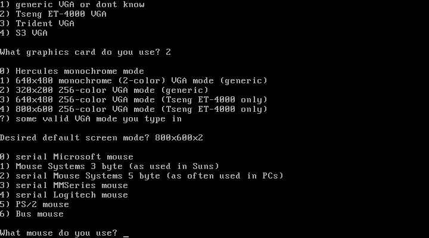
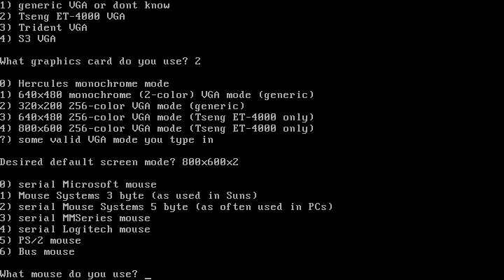

First impressions
The default install of MGR looks as bare as X11 with pure twm. Unlike X11, MGR is built around terminal emulation, so every new window is always a terminal. The left mouse button is used by MGR exclusively - to create new windows and rearrange old ones. This means applications are left with only right and middle clicks. An accidental left click will trigger the "Move window" operation, and will surely confuse you at first.
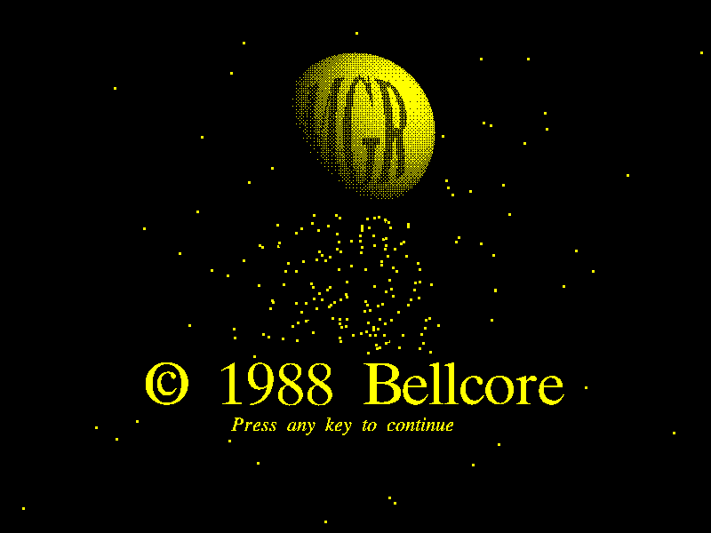
 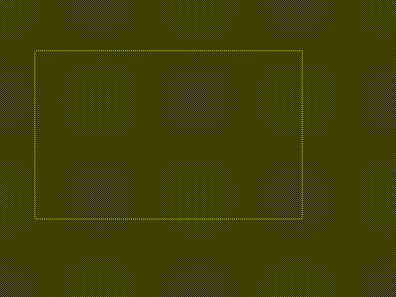
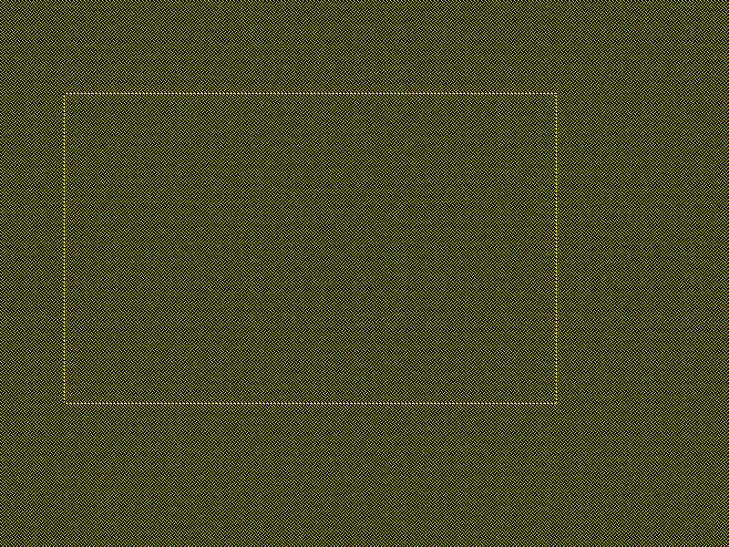

Menu system
Even if MGR was merely a graphical terminal multiplexor, it would've been awesome. But each terminal has vector and raster graphics support, and comes with mouse events and rudimentary menu support. Users can create new menus for console applications that do not support MGR out of the box - check out this custom menu for Vi!
One extra cool feature is support for "Cut-And-Paste". The "cut" is actually "copy", though.
 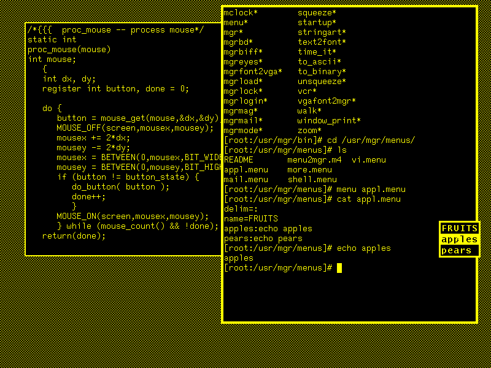
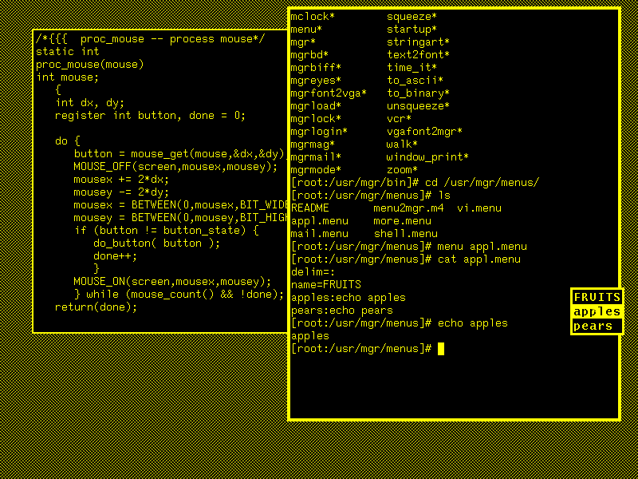

 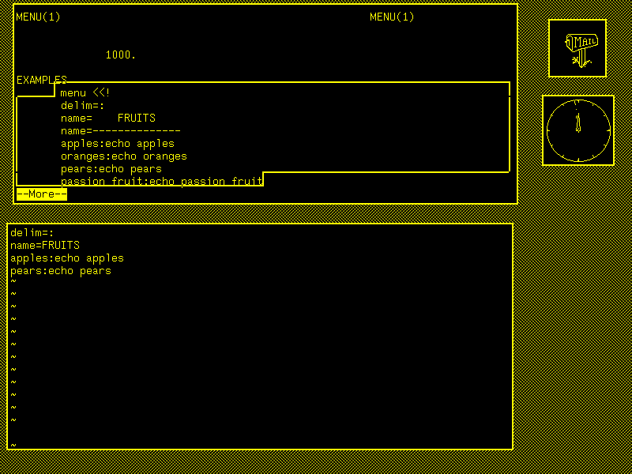
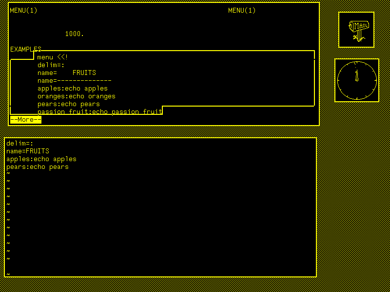
Graphical applications
As you can see, MGR has decent support for console applications (vi, less and emacs), and comes with a set of toys (mail checker, clock, demos). There are some larger graphical applications, too.
pilot
Pilot is an image viewer. You can use the middle mouse button to scroll through the images.
mgrsketch
Sketch is a vector graphics editor. You have to use the right mouse button to draw things, as the left mouse button is reserved by the MGR itself. The middle mouse button has a menu, but it seems to be broken in Linux. It is not very fun to use.

mphase
Mphase shows you the moon phase. 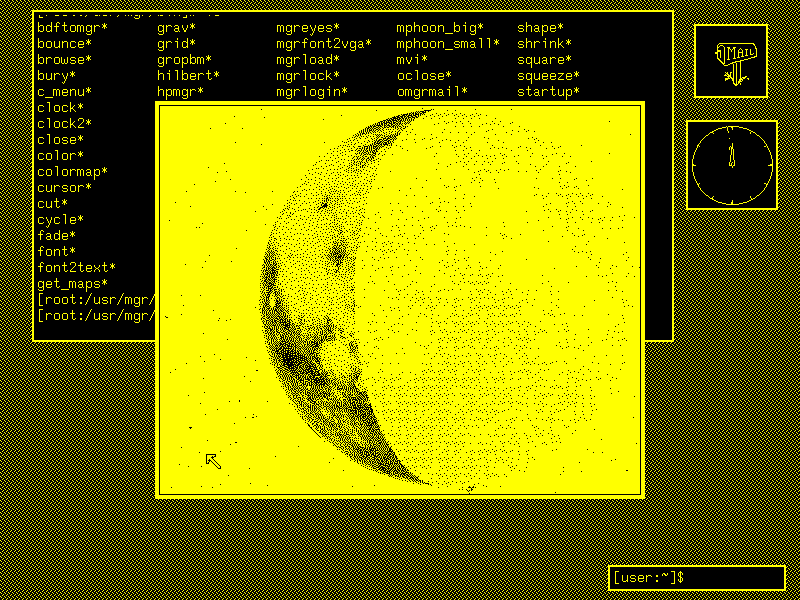
mgrview
MGRview is yet another image viewer. It is much simpler than pilot.
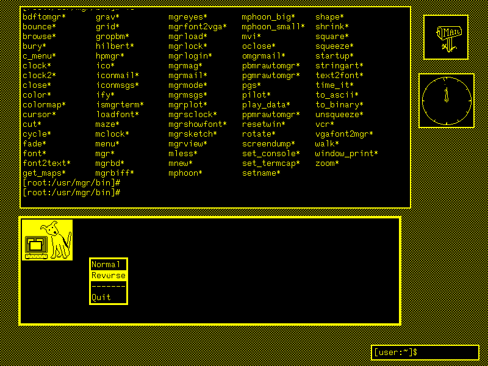
Ify
Ify ("iconify") is a really clever tool for window management. If you want to minimise the window, click the Ify's window with the left click, and then the target window with the right click - it will become minimised! To un-minimise the window, repeat this operation once more.

font
The font command allows one to choose their favourite terminal font. The font can be used right in the shell scripts, too - previously printed text is not erased from the screen, as you can see.

mgrshowfont
This is a tool that can help you choose a font. It is unusual because it has on-screen buttons, instead of relying on a middle-click menu. I wish other apps were like this.
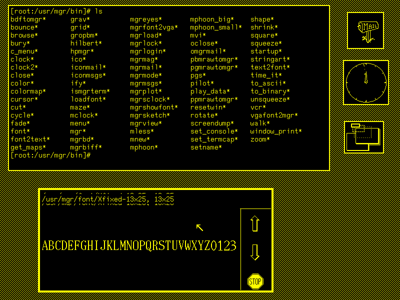
pgs
pgs is a PostScript viewer based on Ghostscript. It only supports monochrome output, but it can scale and rotate pages. To make pgs work, you need to patch your Ghostscript using the patch provided with the MGR. To save you the trouble, I got the GS sources from Debian 0.93 and patched them with the pgs/MGR support. pgs is really a gem of this MGR distribution; I can imagine it being very useful for previewing TeX output.

Entertainment
Maze
"Can it run Doom?" Well, no, but it has a maze game. Use l and r to turn, and space to walk.

mgrbd
A Boulder Dash clone with vi-style controls.
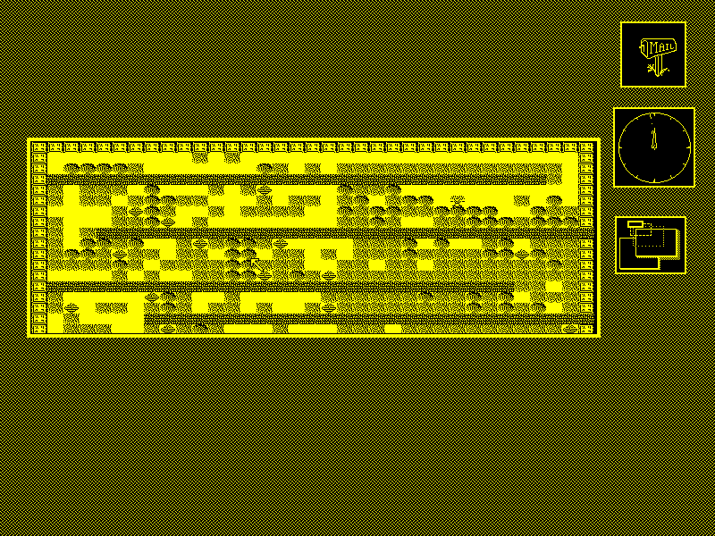
Exiting MGR
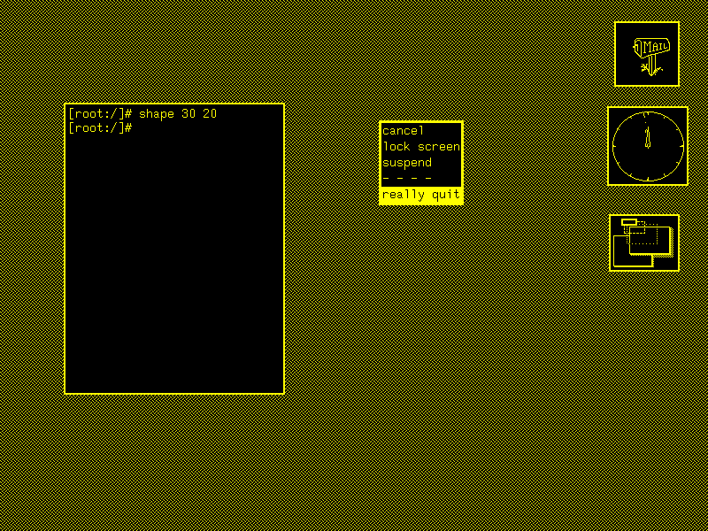
SVGA mode
It is possible to compile MGR with SVGA support. The SVGA support uses video memory banking and thus is quite slow. Most applications only support monochrome, so there is little point in using this mode.
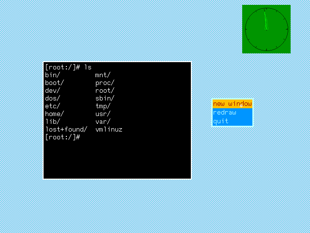
Closing thoughts
You can find my hard disk image with the installed MGR and patches applied to MGR and GS on the Internet Archive.
Further reading
- ManaGeR wikipedia page
- Stephen Uhler's home page
- Architecture and Design of the MGR Window System - a paper by S. Uhler
- The MGR Window System - Linux, Coherent and Solaris ports, contributed by Michael Cardell MC Widerkrantz
- The Linux Documentation Project's How To MGR - put together by Vincent Broman
- $HOME MOVIE – Tools for Building Demos on a Sparcstation - a paper by S. Uhler
Some notable forks
- Mgr port to Raspberry Pi project
- SDL + CMake port
- X11 port
- Some more improvements for the X11 port
- Fixes to make Mgr work in X11 again, plus LinuxFB project
Thanks
- I am endlessly grateful to Stephen Uhler for creating such a wonderful windowing system and for uploading the documentation about it on his website;
- And to all the people who ported it to Linux and packaged it so I didn't have to, including but not limited to Vincent Broman, Alex Liu and Tommy Frandsen;
- To MC for preserving the packages on the homepage, as well as sharing the history of the ports;
- To my fiancée for being patient with me while I was figuring out how to make the system work, and for being an early tester of the build.